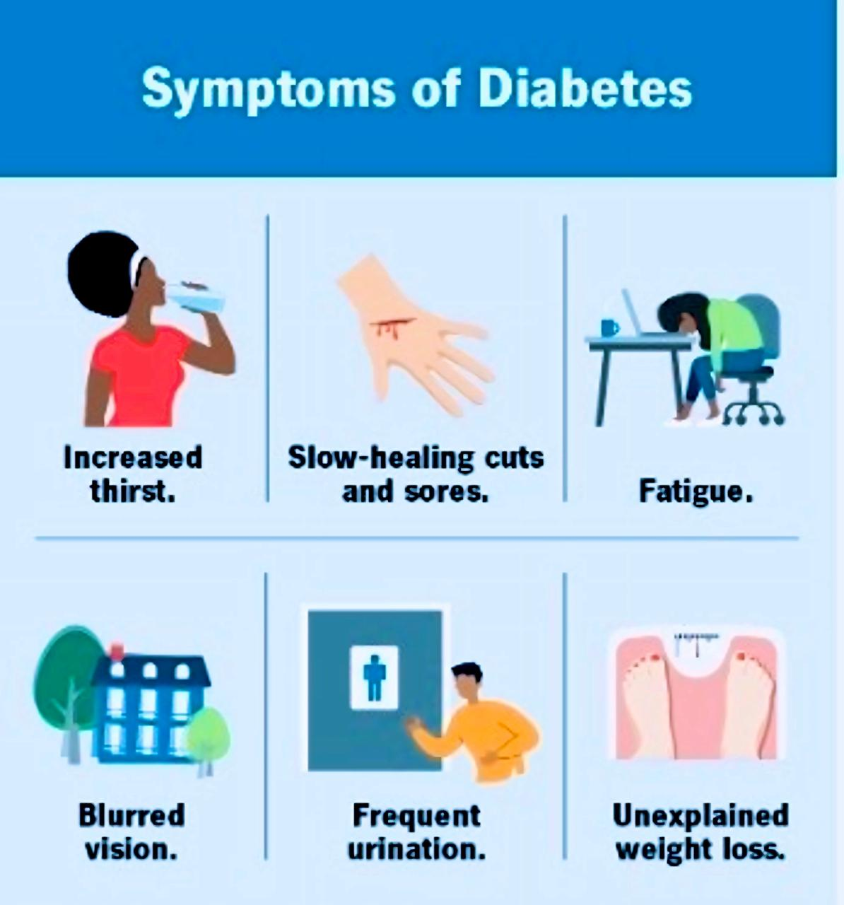

Type 2 Diabetes is a chronic condition where the body resists insulin or produces insufficient amounts, leading to high blood sugar. It is the most common diabetes
type, linked to genetics and lifestyle factors, and develops gradually. Management includes lifestyle changes, medication, or insulin therapy.

Worldwide, it is estimated that 240 million individuals live with undiagnosed diabetes, with nearly half
of all adults with diabetes being unaware of their illness. 5 Diabetes imposes a heavy financial strain
on healthcare systems worldwide. It is estimated that 537 million (10.5%) individuals (those aged
20–79years) worldwide are currently managing the disease. 5 , 6 In 2021, the International Diabetes
Federation(IDF) approximated that there were 537 million individuals living with diabetes, making
up 10.5% of the global population, resulting in global healthcare expenses amounting to $966 billion.
5 This health cost is predicted to rise to more than $1054 billion by 2045. It is alarming that the
prevalence of DM is anticipated to increase to 643 million (11.3%) by 2030 and 783 million (12.2%)
by 2045 ,the uprising trend of the number (millions) of people aged 20−79 years who have diabetes
worldwide.
| Year |
Number in million |
| 2000 |
151 |
| 2003 |
194 |
| 2007 |
146 |
| 2010 |
285 |
| 2011 |
366 |
| 2013 |
382 |
| 2015 |
415 |
| 2017 |
425 |
| 2019 |
436 |
| 2021 |
537 |
| 2030 |
783 |
Causes of Type 2 Diabetes
Several factors contribute to the development of Type 2 Diabetes:
- Genetic Predisposition:
- If a close family member (parent, sibling) has diabetes, your risk is significantly higher.
- Certain ethnic groups (e.g., South Asians, African-Americans) have a higher genetic risk.
- Lifestyle Choices:
- Unhealthy Diet: High intake of sugary, processed foods and low fiber.
- Lack of Exercise: Sedentary lifestyle reduces insulin sensitivity.
- Obesity: Especially abdominal (belly) fat, which contributes to insulin resistance.
- Hormonal Imbalances:
- Certain conditions like Polycystic Ovary Syndrome (PCOS) increase the risk of developing T2D.
- Age and Gender:
- increase the risk of developing T2D.

Symptoms of Type 2 Diabetes
Some people may have mild or no symptoms initially. Common signs include:
- Frequent urination (polyuria): High blood sugar leads to excess glucose in the urine,
which pulls water with it.
- Increased thirst (polydipsia): The body compensates for fluid loss.
- Fatigue: Glucose doesn’t effectively reach cells for energy.
- Blurred vision: High sugar levels affect the eye lens.
- Slow wound healing: High glucose impairs the immune system and blood circulation.
- uDarkened skin patches (acanthosis nigricans): Commonly found in body folds like
the neck or armpits.
Diagnosis of Type 2 Diabetes
Doctors use blood tests to diagnose T2D:
- Fasting Blood Sugar (FBS): Measures blood sugar after an 8-hour fast. A level of 126 mg/dL (7 mmol/L) or higher indicates diabetes.
- HbA1c Test: Shows the average blood sugar over 2-3 months. A value of 6.5% or higher indicates diabetes.
- Oral Glucose Tolerance Test (OGTT): Measures blood sugar before and 2 hours after consuming a sugary drink.
- Random Blood Sugar Test: A reading of 200 mg/dL (11.1 mmol/L) or higher suggests diabetes.

Management and Preparation for Type 2 Diabetes
Managing Type 2 Diabetes focuses on controlling blood sugar levels to prevent complications.
- Diet
- Eat balanced meals: Include vegetables, lean proteins, whole grains, and healthy fats.
- Reduce refined sugars: Avoid sugary drinks, white bread, and processed snacks.
- Carbohydrate counting: Learn how many carbs are in your food and spread intake throughout the day.
- Glycemic Index (GI): Prefer low-GI foods (e.g., lentils, quinoa) that don’t spike blood sugar quickly.
- Exercise
- Aim for 30 minutes of moderate activity (walking, cycling, or swimming) 5 times a week.
- Strength training 2-3 times per week to improve insulin sensitivity.
- Even light activities like gardening or stretching can help.
- Blood Sugar Monitoring
- Use a glucometer to regularly check blood sugar.
- Record fasting blood sugar and post-meal levels to identify trends.
- Medications
- Oral Medications:
- Metformin: Lowers sugar production in the liver and improves insulin sensitivity.
- Sulfonylureas: Stimulates the pancreas to produce more insulin.
- Insulin Therapy: For those whose pancreas cannot meet insulin demands.
- Weight Management
- Losing even 5-10% of body weight can significantly improve blood sugar levels.
- Combine diet and exercise for long-term success.
- Education and Support
- Combine diet and exercise for long-term success.
- Work with a dietitian or diabetes care team for personalized advice.
- Join support groups for motivation and tips.
Preventing Type 2 Diabetes :
it often achievable through lifestyle changes. Maintaining a healthy weight by adopting a balanced
diet and engaging in regular exercise plays a key role. Following a Mediterranean diet, which is
rich in fruits, vegetables, nuts, and olive oil, can also help reduce the risk. It is important
to limit the consumption of sugar-sweetened beverages and fast food, as they contribute to
weight gain and insulin resistance. Staying active by incorporating movement throughout the
day, especially breaking up long periods of sitting, is essential. Additionally, individuals
with a family history of diabetes or other risk factors should undergo regular screenings to
monitor blood sugar levels and detect early signs of the condition.